Yash Jangir1, Yidi Zhang1*, Kashu Yamazaki1*, Chenyu Zhang1*, Kuan-Hsun Tu2, Tsung-Wei Ke2, Lei Ke1, Yonatan Bisk1, Katerina Fragkiadaki1
1Carnegie Mellon University, 2National Taiwan University
* denotes equal contribution
The pursuit of robot generalists—instructable agents capable of performing diverse tasks across diverse environments—demands rigorous and scalable evaluation. Yet real-world testing of robot policies remains fundamentally constrained: it is labor-intensive, slow, unsafe at scale, and difficult to reproduce. Existing simulation benchmarks are similarly limited, as they train and test policies within the same synthetic domains and cannot assess models trained primarily on real-world demonstrations, which is the dominant paradigm for today's vision-language-action (VLA) models. As policies expand in scope and complexity, these barriers only intensify, since defining "success" in robotics often hinges on nuanced human judgments of execution quality. In this paper, we introduce a new benchmarking framework that overcomes these challenges by shifting VLA evaluation into large-scale simulated environments augmented with online human feedback. Leveraging advances in vision-language models, 2D-to-3D generative modeling, and differentiable rendering, our approach automatically converts video demonstrations from widely used robot datasets into simulated counterparts. Within these digital twins, we assess VLA policies using both automated VLM-guided scoring and scalable human preference judgments collected from crowdworkers—transforming human involvement from tedious scene setup, resetting, and safety supervision into lightweight preference comparisons. To measure robustness, we systematically perturb simulated environments along multiple axes— textures and object placements — stress-testing policy generalization under controlled variation. The result is a continuously evolving, reproducible, and scalable benchmark for real-world-trained robot manipulation policies, addressing a critical missing capability in today's robotics landscape.
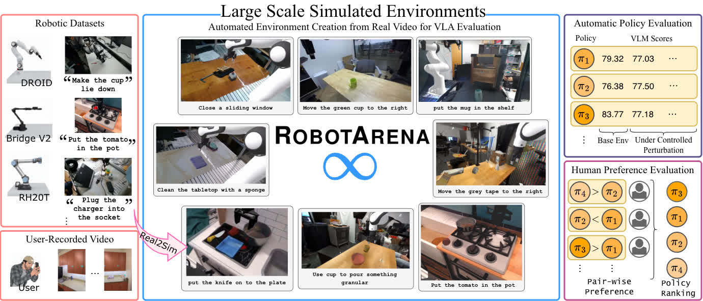
An overview of our Real-to-Sim translation pipeline for generating unlimited benchmark environments.
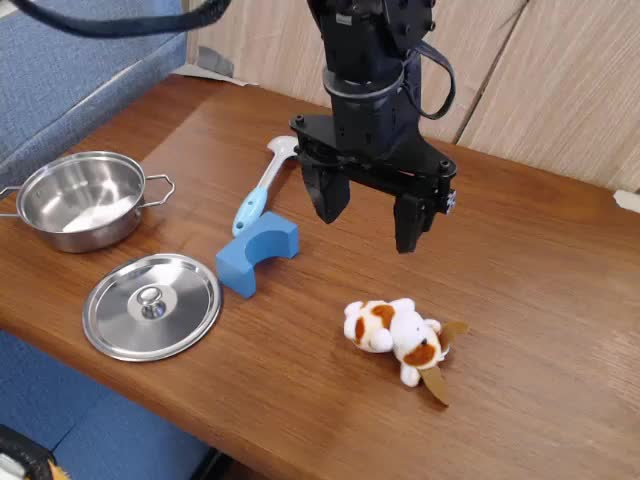


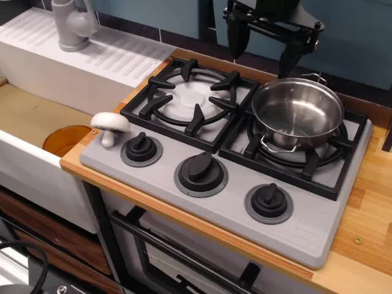
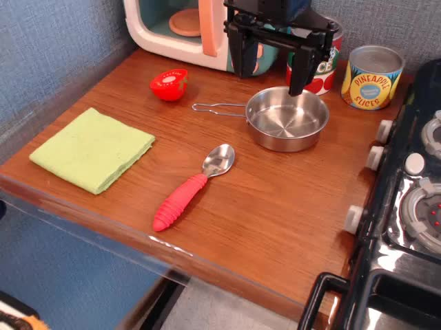
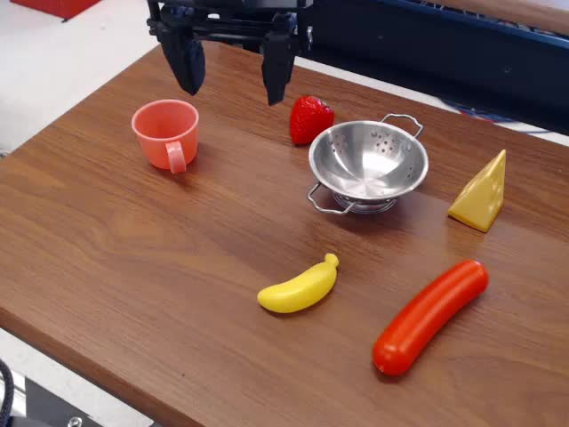
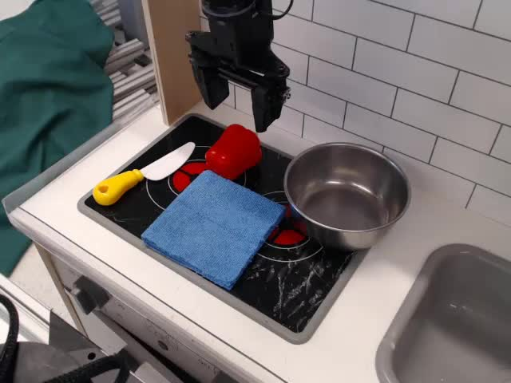

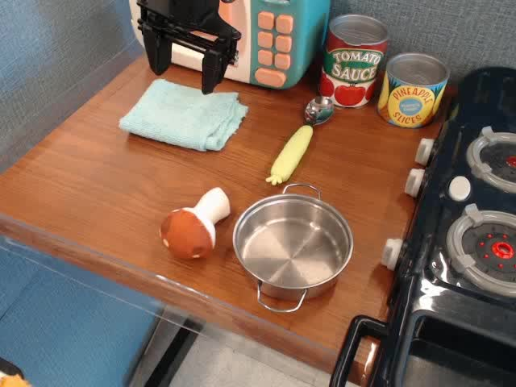
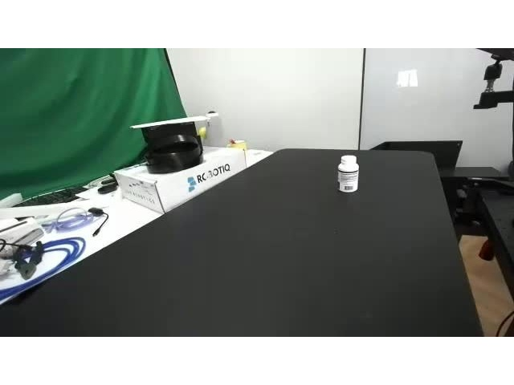

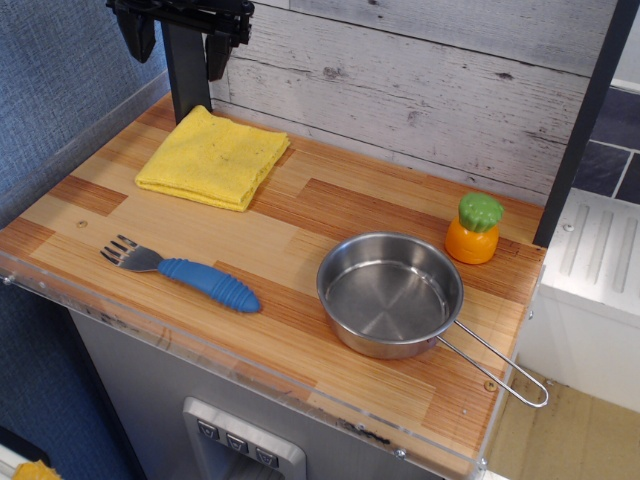

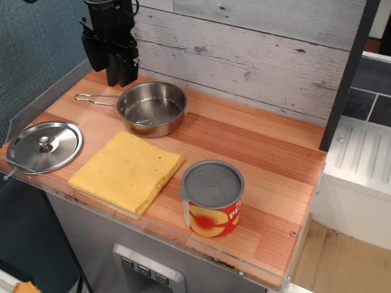

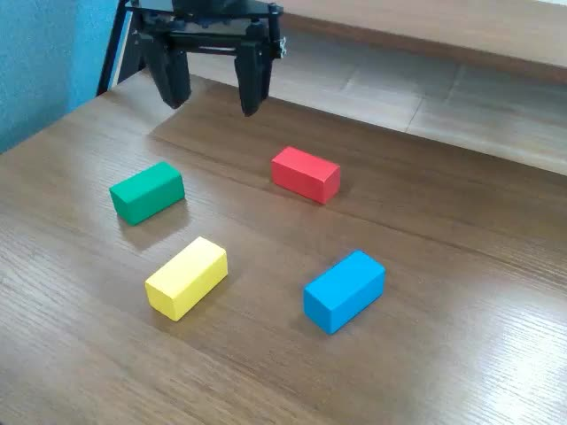

💡 Click on a tab (e.g., Background Change) multiple times to cycle through all available perturbations.
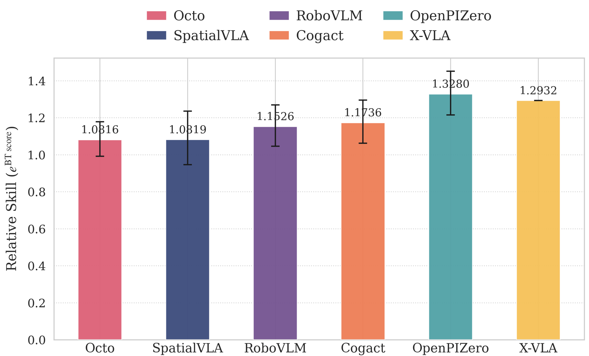
Bradley-Terry scores calculated from crowd-sourced human preferences on execution videos.
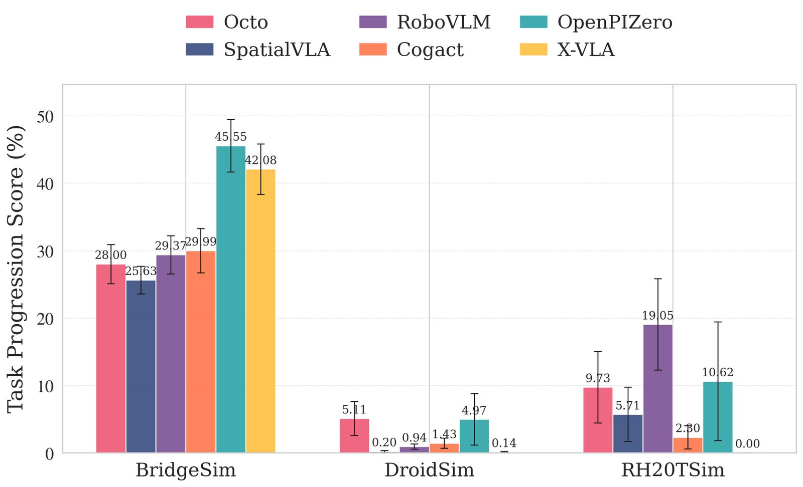
Task progression scores from Gemini in RobotArena \(\infty\) environments.
@misc{jangir2025robotarenainftyscalablerobot,
title={RobotArena $\infty$: Scalable Robot Benchmarking via Real-to-Sim Translation},
author={Yash Jangir and Yidi Zhang and Kashu Yamazaki and Chenyu Zhang and Kuan-Hsun Tu and Tsung-Wei Ke and Lei Ke and Yonatan Bisk and Katerina Fragkiadaki},
year={2025},
eprint={2510.23571},
archivePrefix={arXiv},
primaryClass={cs.RO},
url={https://arxiv.org/abs/2510.23571},
}